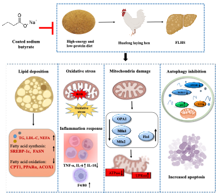
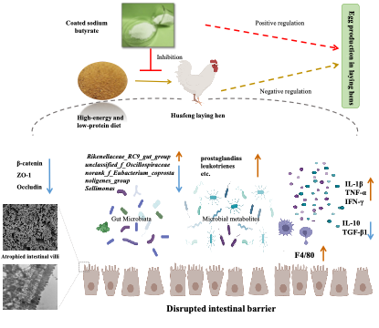
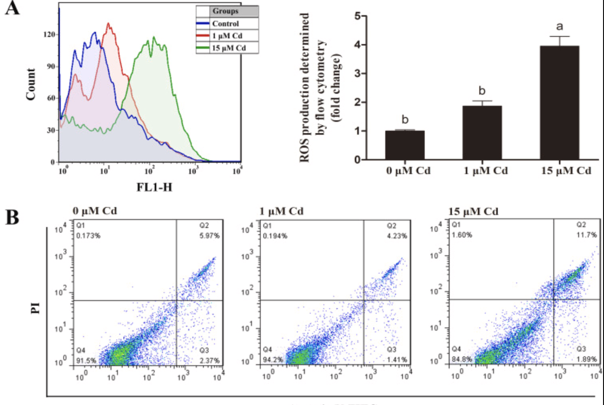
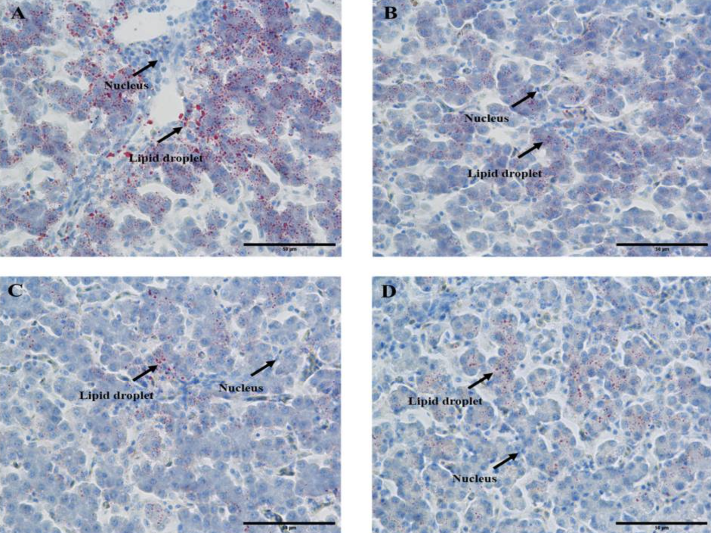
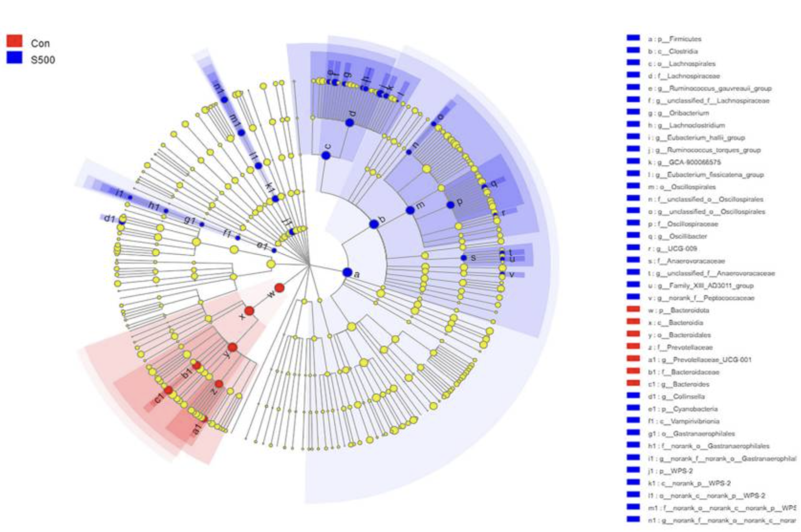
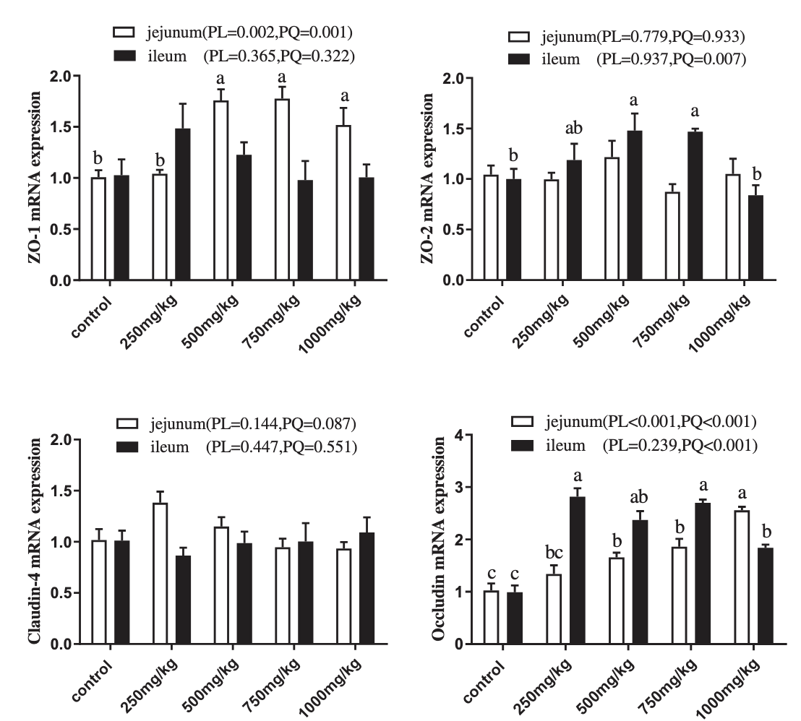

|
I am currently pursuing a Ph.D. degree in Animal Nutrition and Feed Science, at Zhejiang University, supervised by Professor Xiaoting Zou and Associate Reseacher Xinyang Dong. I am expected to graduate in June 2024. During my Ph.D. studies, my research mainly focuses on nutritional regulation of fatty liver and intestinal metabolic function by sodium butyrate, as well as the effects of heavy metals on ovarian damage and granulosa cell cell proliferation and apoptosis. |
{kind=link}
|
( '*' means Equal Contribution or First Student Author) |
|  |
Sasa Miao, Tianming Mu, Ru Li, et al. Journal of Animal Science and Biotechnology (2024, Q1，TOP) |
|  |
Sasa Miao, Jiankui Li, Ying Chen, et al. Animal Nutrition (Under review, Q1，TOP) |
|
Sasa Miao, et al. Journal of Agriculture and Food Chemistry (Writing, Q1，TOP) |
|
|  |
Zhu Mingkun, Miao Sasa*(Equal Contribution), Zhou Wenting, et al. Ecotoxicology and Environmental Safety, 2021 |
|  |
Sasa Miao, Yan Li, Mu Tianming, et al. Metabolites, 2023 |
|  |
Sasa Miao, Zuopeng Hong, Huafeng Jian, et al. Animals, 2022 |
|  |
Sasa Miao, Wenting Zhou, Huaiyu Li, et al. Italian Journal of Animal Science, 2021 |

|
Huafeng Jian, Sasa Miao, Huafeng Jian, et al. Oxidative Medicine Cellular Longevity, 2021 |
|
2020.06: Excellent Graduate in Xidian University 2020.06: Excellent thesis of master in Xidian University 2018.09: National Scholarships 2018.06: Second prize of Huawei software elite challenge website |
|
2017.09 - 2020.06: M.Sc. in Electronic and Communication Engineering, Xidian University 2013.09 - 2017.06: B.Eng. in Electronic and Information Engineering, China University of Petroleum |
|
2020.06 - 2022.09: Full time job in MEGVII AIC, supervised by Yi Yang, and Shuchang Zhou 2020.09 - Now: Internship in MEGVII AIC, supervised by Yi Yang, and Shuchang Zhou |
|
Email: skfang@buaa.edu.cn Address: Haidian District, Beijing, China |
|
Last update: Sep. 2022. Thanks for the template. |